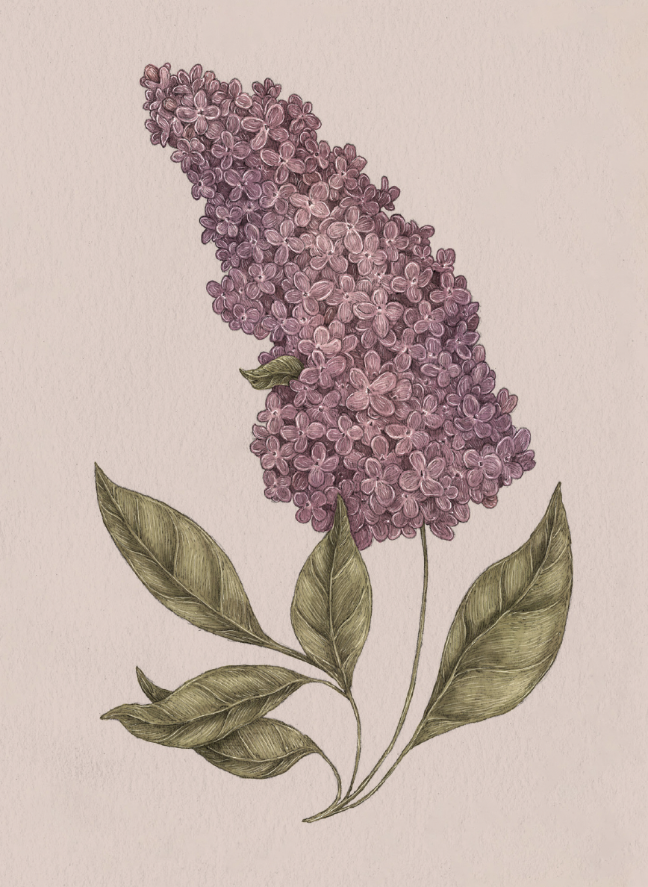

The Language of Flowers
Lilac

Lilac
Syringa
Meaning
- First love
- Reminiscence
Origin
In Greek mythology, Pan, the god of the forests, was in love with Syringa, a nymph who feared his
advances. To disguise herself, Syringa turned into a lilac bush. Pan, upon finding the shrub, cut its
hollow reeds to form the pan flute, memorializing his first love. Victorian widows often wore lilac
while in mourning over their late husbands.
Pair With
- Monkshood to honor your first true love
- Tulip to declare being in love for the first time
- Daisy and Aster for the purity and innocence of one's first love